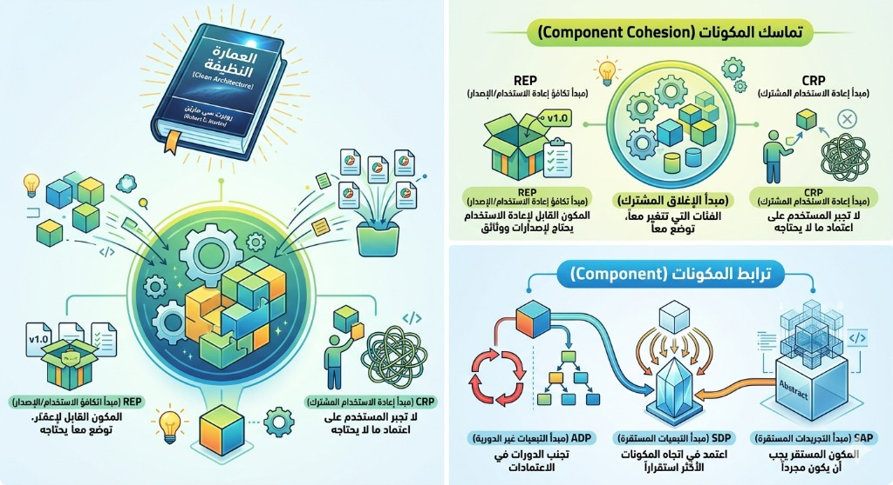

Diagrams — quick references for the principles above.
كثير منا يطبق مبادئ SOLID على مستوى الـ Classes، لكن عندما يكبر النظام، نكتشف أن المشكلة الحقيقية ليست في "الفئة" الواحدة، بل في "كيفية تجميع" هذه الفئات معاً.
في كتابه "Clean Architecture"، وضع "العم بوب" (Robert C. Martin) قواعد ذهبية لإدارة المكونات البرمجية، تنقسم لمجموعتين:
أولاً: تماسك المكونات (Component Cohesion)
كيف نقرر أي Class يوضع مع الآخر في نفس المكون؟
- REP (Reuse-Release Equivalence Principle): لا تطلب من المطورين استخدام مكتبتك (Component) إذا لم تكن توفر لهم سجل تغييرات (Release notes) وأرقام إصدارات واضحة. "ما لا يمكن إصداره بنسخة، لا يمكن إعادة استخدامه".
- CCP (Common Closure Principle): المبدأ الأهم للصيانة؛ الفئات التي تتغير معاً لنفس السبب وفي نفس الوقت، يجب أن توضع في مكون واحد. (هذا هو الـ SRP لكن على مستوى المكونات).
- CRP (Common Reuse Principle): لا تجبر مستخدم المكون على الاعتماد على أشياء لا يحتاجها. إذا كنت تستخدم Class واحد فقط من مكون ضخم، فأي تغيير في المكون سيجبرك على إعادة بناء مشروعك بلا داعٍ.
ثانياً: ترابط المكونات (Component Coupling)
كيف ندير العلاقات والاعتمادات بين هذه المكونات؟
- ADP (Acyclic Dependencies Principle): "ممنوع الدوائر!"؛ لا يجوز للمكون A أن يعتمد على B، وB على C، ثم يعود C ليعتمد على A. هذا يدمر استقلالية الاختبار والنشر.
- SDP (Stable Dependencies Principle): اعتمد دائماً في اتجاه "الاستقرار". المكون الذي من الصعب تغييره (لكثرة المعتمدين عليه) يجب ألا يعتمد على مكونات متقلبة (Easy to change).
- SAP (Stable Abstractions Principle): المكون المستقر يجب أن يكون "مجرداً" (Abstract) بقدر استقراره. لكي يظل النظام مرناً، المكونات الأساسية التي يعتمد عليها الجميع يجب أن تتكون من Interfaces و Abstract classes.
الخلاصة من "Clean Architecture"
تصميم البرمجيات ليس مجرد كتابة كود "يعمل"، بل هو موازنة دقيقة بين هذه المبادئ. أحياناً ستضحي بـ REP من أجل CCP في بداية المشروع، وهذا طبيعي. المهم هو الوعي بأن التبعات (Dependencies) هي التي تحدد عمر النظام وسهولة صيانته.
Many of us apply SOLID principles at the class level, but as the system grows we discover the real problem is not the single "class" but how we assemble these classes together.
In his book Clean Architecture, "Uncle Bob" (Robert C. Martin) laid down golden rules for managing software components. They fall into two groups:
1. Component cohesion
How do we decide which class belongs with another in the same component?
- REP (Reuse-Release Equivalence Principle): Do not ask developers to use your library (component) unless you give them release notes and clear version numbers.
What cannot be released as a version cannot be reused.
- CCP (Common Closure Principle): The key principle for maintenance: classes that change together for the same reason and at the same time should live in one component. (This is SRP at the component level.)
- CRP (Common Reuse Principle): Do not force a component consumer to depend on things they do not need. If you use only one class from a large component, any change in that component can force unnecessary rebuilds of your project.
2. Component coupling
How do we manage relationships and dependencies between these components?
- ADP (Acyclic Dependencies Principle):
No cycles!
Component A must not depend on B, B on C, and then C back on A. That undermines independent testing and deployment. - SDP (Stable Dependencies Principle): Depend in the direction of stability. A component that is hard to change (because many depend on it) should not depend on volatile components (easy to change).
- SAP (Stable Abstractions Principle): A stable component should be as abstract as its stability. To keep the system flexible, foundational components that everyone depends on should be built from interfaces and abstract classes.
Takeaway from Clean Architecture
Software design is not merely writing code that "works"; it is a careful balance among these principles. Sometimes you will trade REP for CCP early in a project, and that is normal. What matters is awareness that dependencies shape the system's lifespan and maintainability.